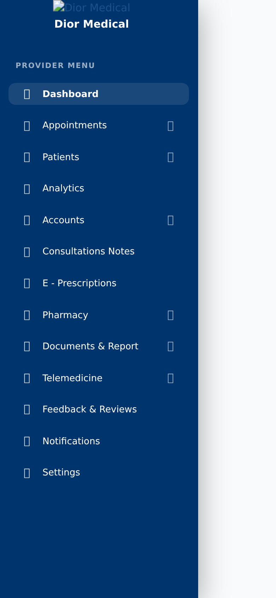
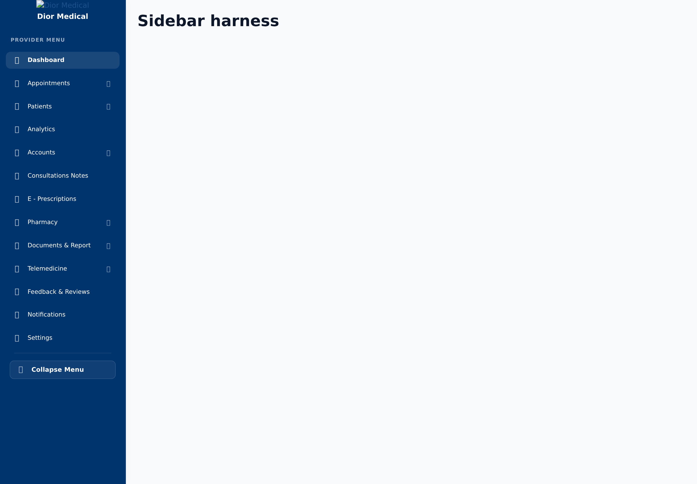
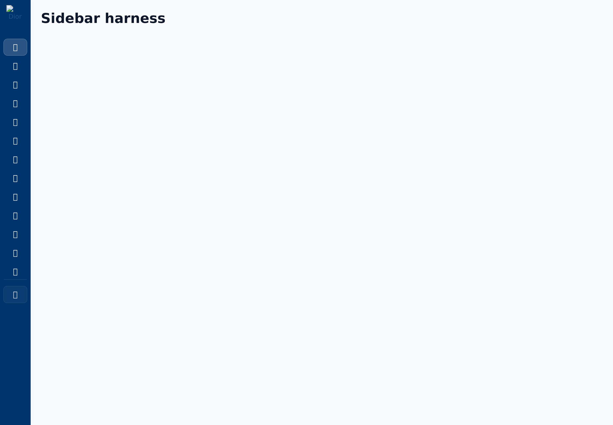

Mobile drawer se hata diya, aur desktop par ek proper soft plate style de diya — dono dashboards (doctor + patient) me same.
CSS me pehle se display:none likha hua tha, par woh kabhi apply hi nahi
hota tha. Do !important rules aapas me clash kar rahi thin, aur jeet
specificity se hui:
LOSE (0,2,0) .dior-doctor-wrap .dior-doc-collapse-btn { display: none !important } ← mobile hide rule WINS (0,3,0) :is(.dior-patient-portal-wrap, .dior-doctor-wrap, .dior-admin-wrap) .dior-side-nav .dior-nav-btn { display: flex !important } ← generic nav-button rule
Important: jab dono declarations !important hon, cascade
ka faisla specificity se hota hai — source order se nahi. Isliye hide rule neeche hone ke
baawajood bhi haar gayi, aur button drawer me chala aaya. Naya selector 0,4,0 hai,
isliye ab reliably jeetta hai.
Patient dashboard me bhi bilkul yahi bug tha — same toggle, same cascade clash. Dono ek saath fix kiye, warna ek dashboard theek hota aur doosre me button reh jaata.
390px — drawer khula, “Collapse Menu” nahi hai

Ab mobile par:
display:none nahi — height/margin/padding sab zero, taki koi khali gap ya
invisible tap-target na bache.
| Aspect | Pehle | Ab |
|---|---|---|
| Background | transparent — label seedha navy par float kar raha tha | soft white plate rgba(255,255,255,.06) + 1px hairline border, 9px radius |
| Separator | poori width ki solid hairline | inset hairline with 8px gutter — nav list se saaf alag dikhta hai |
| Hover | plate .10 opacity |
plate .13 + border highlight + pure white label |
| Text | 14px, weight 600 | 13px, weight 600, slight letter-spacing — nav rows se chhota, taaki secondary action lage |
| Focus | none | same hover treatment (keyboard accessible, visible focus) |
| Icon | 15px | 13px, hover par full opacity |

Sidebar collapse hone par toggle ek 56px centred icon tile ban jaata hai — label
chhup jaata hai, plate halka ho jaata hai (.04), separator full width. Koi layout shift
nahi, icon dead-centre.
| Width | Doctor dashboard | Patient dashboard |
|---|---|---|
| 390px | hidden | hidden |
| 820px | hidden | hidden |
| 1024px | hidden | hidden |
| 1440px | visible 219×38, soft plate | visible |
Regression: popup theme suite, settings page checks (1440/1024/820/390/320) aur documents E2E — sab pass, zero console errors. Collapse/expand behaviour aur localStorage state jaisa tha waisa hi hai.
assets/css/dior-custom.css — end me do scoped blocks. Sirf CSS: koi PHP/JS change nahi,
isliye collapse toggle ka JS behaviour, submenu state aur localStorage untouched hain.